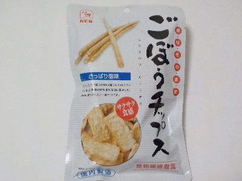

岡山県倉敷市中島1138
更新日 : 2024/05/31

ごぼうがとっても薄いので、衣のパリパリ感とかサクサク感がいいですね。あと、ごぼうの土っぽさとか筋っぽさも少なかったです。
塩と油の味が、なんとなくハウス食品のオーザックっぽいって思いました。
塩が効いているのでお酒のおつまみにピッタリです。
【おいしいものを食べよう。】【たくさん寝よう。】
【ソロ活をしよう!】【季節感のあることをしよう。】【動画視聴はほどほどに。】【当サイトの全てのコンテンツは無断転載禁止です。】